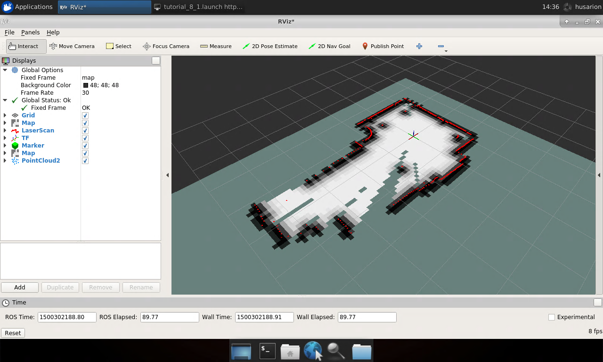
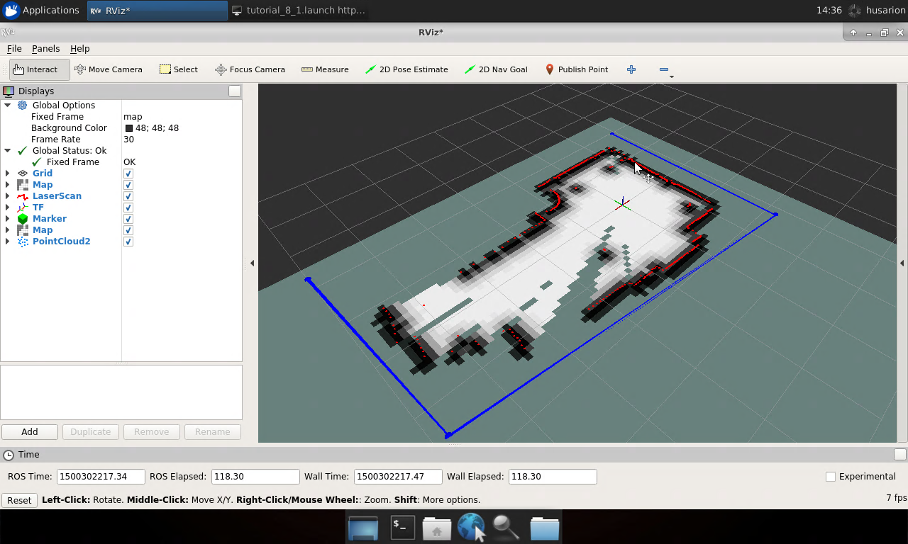
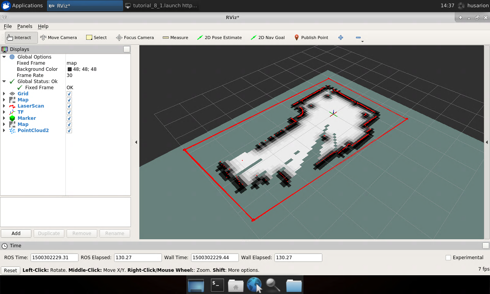
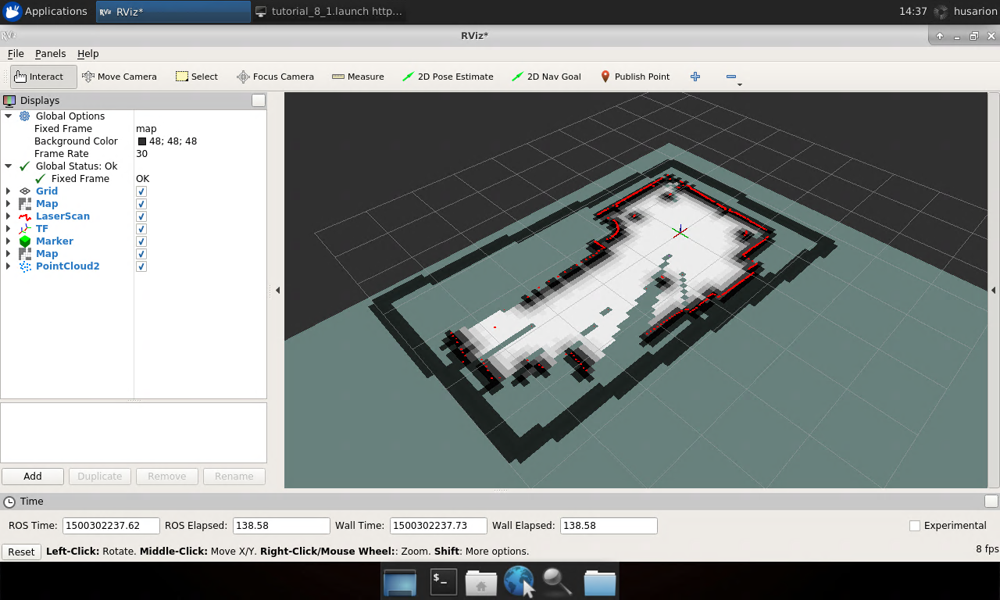
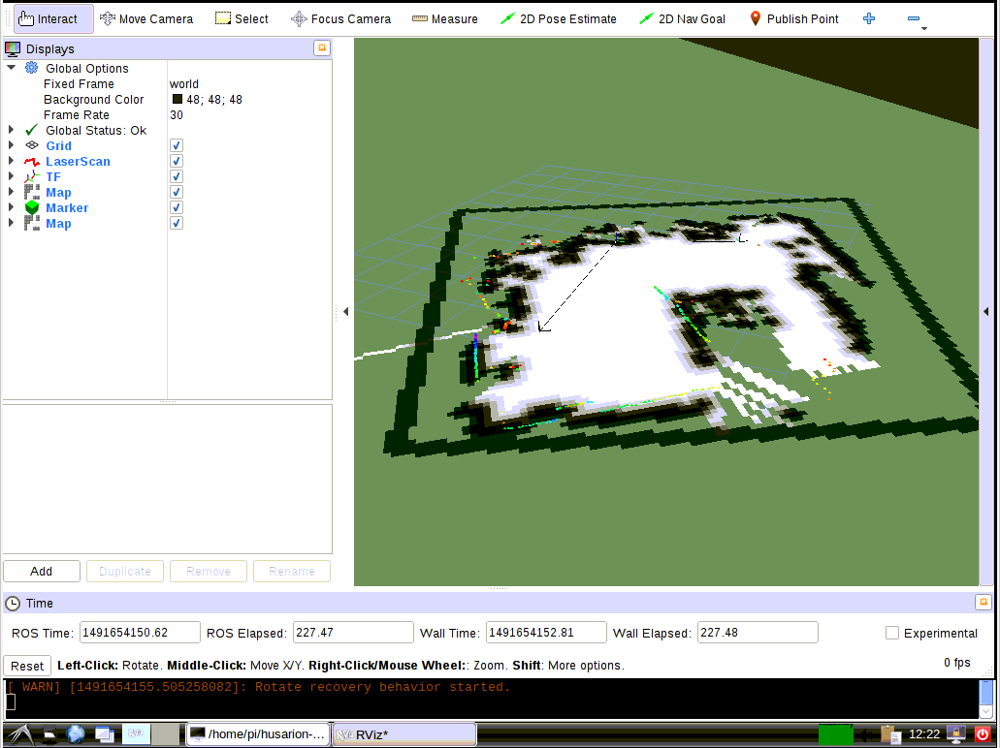

Unknown environment exploration
Introduction
Environment exploration task is to determine robot desired positions in such a sequence which gives as much information regarding environment as possible. One of the approaches for this task is to frontiers of occupancy grid. As a frontier we define line between free space ant territory marked as unknown. Moving towards frontiers, unknown area can be explored and marked as free or occupied and frontiers are moved into an unknown territory. Process is repeated until all frontiers are investigated, this means free area must be surrounded by occupied cells.
Environment exploration in ROS
In ROS it is possible to explore environment with use of occupancy grid
frontiers. One of the nodes, that perform this task is explore_server
node from frontier_exploration package. This node uses occupancy grid
e.g. created by slam_gmapping and publishes goal position to
/move_base/goal topic subscribed by path planner e.g. move_base
node.
Requirements regarding robot
Before continuing with explore_server node certain requirements must
be met, robot should:
subscribe
/move_base/goaltopic with message typegeometry_msgs/PoseStampedin which robot desired positions are included.Publish map to
/maptopic with message typenav_msgs/OccupancyGrid
Above configuration is met by the robot created in previous manual.
Moreover, we will use explore_client node from frontier_exploration
package, this will make easier to define exploration area through
rviz.
Configuration of explore_server node
Based on occupancy grid, explore_server node determines frontiers
between free and unknown area and using them determines robot
destinations. It is necessary to define some parameters for
explore_server before running it.
Begin with robot outline, transform tolerance, update and publish frequency, map coordinate frame name, robot coordinate frame name, resolution and define if map should follow position of robot, these parameters have the same meaning as for trajectory planning:
footprint: [[0.12, 0.14], [0.12, -0.14], [-0.12, -0.14], [-0.12, 0.14]]
transform_tolerance: 5
update_frequency: 5
publish_frequency: 5
global_frame: map
robot_base_frame: base_link
Define what kind of map layers to use:
plugins:
- {name: static, type: "costmap_2d::StaticLayer"}
- {name: explore_boundary, type: "frontier_exploration::BoundedExploreLayer"}
- {name: inflation, type: "costmap_2d::InflationLayer"}
Parameters for static map layer, map topic name and define if map can change:
static:
map_topic: /map
subscribe_to_updates: true
Parameters for exploration boundaries layer:
explore_boundary:
resize_to_boundary: false
frontier_travel_point: "middle"
explore_clear_space: false
Parameters meaning:
resize_to_boundary- Defines if cost map should be resized to boundaries of search region.frontier_travel_point- While defining next destination, which fragment of frontier to choose, could beclosestto robot,middleof frontier orcentroidof all frontier points.explore_clear_space- Defines if exploration node should explore space marked as clear or only unknown space.
Parameters for obstacles inflation layer, define inflation radius:
inflation:
inflation_radius: 0.5
Your final file should look like below:
footprint: [[0.12, 0.14], [0.12, -0.14], [-0.12, -0.14], [-0.12, 0.14]]
transform_tolerance: 5
update_frequency: 5
publish_frequency: 5
global_frame: map
robot_base_frame: base_link
plugins:
- {name: static, type: "costmap_2d::StaticLayer"}
- {name: explore_boundary, type: "frontier_exploration::BoundedExploreLayer"}
- {name: inflation, type: "costmap_2d::InflationLayer"}
static:
map_topic: /map
subscribe_to_updates: true
explore_boundary:
resize_to_boundary: false
frontier_travel_point: "middle"
explore_clear_space: false
inflation:
inflation_radius: 0.5
Save it as exploration.yaml in tutorial_pkg/config directory.
Launching exploration task
To test above configuration you will need to run explore_server node
with nodes from path planning configuration.
To remind, you will need to run following nodes:
CORE2bridge node -/opt/husarion/tools/rpi-linux/ros-core2-client /dev/ttyCORE2rplidarNode- driver for rpLidar laser scannerdrive_controller_node-tfpublisher for transformation of robot relative to starting point
Or instead ot these three, Gazebo:
roslaunch rosbot_gazebo maze_world.launch
And:
static_transform_publisher-tfpublisher for transformation of laser scanner relative to robotslam_gmapping- map building nodemove_base- trajectory plannerexplore_server- exploration taskexplore_client- node for defining exploration arearviz- visualization tool
For the explore_server node you will need to specify some parameters
and paths for .yaml configuration files:
<node pkg="frontier_exploration" type="explore_server" name="explore_server" output="screen">
<param name="frequency" type="double" value="1.0"/>
<param name="goal_aliasing" type="double" value="0.5"/>
<rosparam ns="explore_costmap" subst_value="true" file="$(find tutorial_pkg)/config/exploration.yaml" command="load" />
</node>
Parameter frequency defines how often new goal should be recalculated
and goal_aliasing defines last goal and new goal before it is
published to trajectory planner.
You can use below launch file:
<launch>
<arg name="use_rosbot" default="true"/>
<arg name="use_gazebo" default="false"/>
<include if="$(arg use_gazebo)" file="$(find rosbot_gazebo)/launch/maze_world.launch"/>
<include if="$(arg use_gazebo)" file="$(find rosbot_gazebo)/launch/rosbot.launch"/>
<param if="$(arg use_gazebo)" name="use_sim_time" value="true"/>
<node if="$(arg use_rosbot)" pkg="rplidar_ros" type="rplidarNode" name="rplidar">
<param name="angle_compensate" type="bool" value="true"/>
</node>
<node if="$(arg use_rosbot)" pkg="tutorial_pkg" type="drive_controller_node" name="drive_controller"/>
<node pkg="tf" type="static_transform_publisher" name="laser_broadcaster" args="0 0 0 3.14 0 0 base_link laser_frame 100" />
<node pkg="rviz" type="rviz" name="rviz"/>
<node pkg="gmapping" type="slam_gmapping" name="gmapping">
<param name="base_frame" value="base_link"/>
<param name="odom_frame" value="odom" />
<param name="delta" value="0.1" />
</node>
<node pkg="move_base" type="move_base" name="move_base" output="screen">
<param name="controller_frequency" value="10.0"/>
<rosparam file="$(find tutorial_pkg)/config/costmap_common_params.yaml" command="load" ns="global_costmap" />
<rosparam file="$(find tutorial_pkg)/config/costmap_common_params.yaml" command="load" ns="local_costmap" />
<rosparam file="$(find tutorial_pkg)/config/local_costmap_params.yaml" command="load" />
<rosparam file="$(find tutorial_pkg)/config/global_costmap_params.yaml" command="load" />
<rosparam file="$(find tutorial_pkg)/config/trajectory_planner.yaml" command="load" />
</node>
<node pkg="frontier_exploration" type="explore_client" name="explore_client" output="screen"/>
<node pkg="frontier_exploration" type="explore_server" name="explore_server" output="screen">
<param name="frequency" type="double" value="1.0"/>
<param name="goal_aliasing" type="double" value="0.5"/>
<rosparam ns="explore_costmap" subst_value="true" file="$(find tutorial_pkg)/config/exploration.yaml" command="load" />
</node>
</launch>
Setting the exploration area
The easiest way to set exploration area is to use rviz. Go to it and
add some objects to visualize:
/scan/LaserScan/map/Map/exploration_polygon_marker/Marker- this will help you with defining exploration area/explore_server/explore_costmap/costmap/Map- this will show area to explore/explore_server/explore_costmap/explore_boundary/frontiers/PointCloud2- this will show frontiers found in the area
You can also add Tf visualization, but it is not necessary for proper
operation.

From toolbar select Publish Point button and click in visualization
window, this will be first corner of exploration area, select
Publish Point button again and choose second corner of exploration
area, they will be connected by blue line. Continue until desired area
is surrounded by lines.

To finish defining exploration region set last point at the position of first corner, line will become red.

You need to use Publish Point button for the last time, click anywhere
inside region and exploration task will start.

Robot will explore all accessible location within selected area. Observe as robot explores area, when there are no more frontiers or frontiers are not accessible due to obstacles, robot will stop and exploration task is considered as done.

Summary
After completing this tutorial you should be able to configure
explore_server node to find frontiers on occupancy grid map and set
goals for trajectory planner to explore all unknown area, visualize
frontiers found on the map and finally set exploration area using rviz.
by Łukasz Mitka, Husarion
Do you need any support with completing this tutorial or have any difficulties with software or hardware? Feel free to describe your thoughts on our community forum: https://community.husarion.com/ or to contact with our support: support@husarion.com